| MATEMÁTICA
26) Para todo número real x, tal que 0 < x < 1, pode-se considerar 2 - x como uma boa aproximação para o valor de 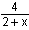 . Nessas condições, a razão positiva entre o erro cometido ao se fazer essa aproximação e o valor correto da expressão, nessa ordem, é
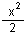
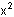
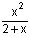
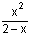 ________________________________________________________________
27) Uma pessoa x pode realizar uma certa tarefa em 12 horas. Outra pessoa, y, é 50% mais eficiente que x. Nessas condições, o número de horas necessárias para que y realize essa tarefa é
4 5 6 7
________________________________________________________________
28) Em uma agência bancária trabalham 40 homens e 25 mulheres. Se, do total de homens, 80% não são fumantes e, do total de mulheres, 12% são fumantes, então o número de funcionários dessa agência que são homens ou fumantes é
42
45 48 49 29) Ao receber moedas como parte de um pagamento, um caixa de uma agência bancária contou t moedas de 1 real, y de 50 centavos, z de 10 centavos e w de 5 centavos. Ao conferir o total, percebeu que havia cometido um engano: contara 3 das moedas de 5 centavos como sendo de 50 centavos e 3 das moedas de 1 real como sendo de 10 centavos. Nessas condições, a quantia correta é igual à inicial
diminuída de R$ 1,35 acrescida de R$ 1,65 diminuída de R$ 1,75 acrescida de R$ 1,75 ________________________________________________________________
30) Seja f a função do 2o grau representada no gráfico abaixo.
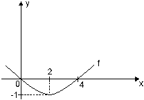
Essa função é dada por
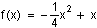
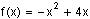
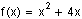
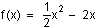 ________________________________________________________________
31) Calculando-se o valor de 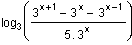, obtém-se
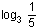
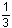
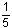
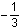
________________________________________________________________
32) Um capital foi aplicado a juro simples e, ao completar um
período de 1 ano e 4 meses, produziu um montante equivalente a
2% 2,2%
2,6% 2,8% 33) Um capital de R$ 15 000,00 foi aplicado a juro simples à taxa bimestral de 3%. Para que seja obtido um montante de R$ 19 050,00, o prazo dessa aplicação deverá ser de 1 ano e 10 meses. 1 ano e 9 meses. 1 ano e 8 meses.
1 ano e 4 meses. ________________________________________________________________ 34) Um capital de R$ 2 500,00 esteve aplicado à taxa mensal de 2%, num regime de capitalização composta. Após um período de 2 meses, os juros resultantes dessa aplicação serão
R$ 98,00
R$ 110,00 R$ 114,00 R$ 121,00 ________________________________________________________________
35) Pretendendo guardar uma certa quantia para as festas de fim de ano, uma pessoa depositou R$ 2 000,00 em 05/06/97 e R$ 3 000,00 em 05/09/97. Se o banco pagou juros compostos à taxa de 10% ao trimestre, em 05/12/97 essa pessoa tinha um total de
R$ 5 320,00 R$ 5 480,00 R$ 5 620,00 R$ 5 680,00
________________________________________________________________ 36) Um trator pode ser comprado à vista por um preço v, ou pago em 3 parcelas anuais de R$ 36 000,00, a primeira dada no ato da compra. Nesse caso, incidem juros compostos de 20% a.a. sobre o saldo devedor. Nessas condições o preço v é
R$ 75 000,00 R$ 88 000,00
R$ 95 000,00 R$ 97 000,00 ________________________________________________________________
Instruções: Para responder às duas questões seguintes considere o enunciado abaixo.
Um industrial, pretendendo ampliar as instalações de sua empresa, solicita R$ 200 000,00 emprestados a um banco, que entrega a quantia no ato. Sabe-se que os juros serão pagos anualmente, à taxa de 10% a.a., e que o capital será amortizado em 4 parcelas anuais, pelo Sistema de Amortização Constante (SAC).
37) O valor da terceira prestação deverá ser
R$ 65 000,00 R$ 68 000,00 R$ 70 000,00 R$ 75 000,00 ________________________________________________________________ 38) Os juros pagos por esse empréstimo deverão totalizar a quantia de
R$ 40 000,00 R$ 45 000,00
R$ 55 000,00 R$ 60 000,00
39) Numa pista circular de autorama, um carrinho vermelho dá uma volta a cada 72 segundos e um carrinho azul dá uma volta a cada 80 segundos. Se os dois carrinhos partiram juntos, quantas voltas terá dado o mais lento até o momento em que ambos voltarão a estar lado a lado no ponto de partida?
6 7 8
10 ________________________________________________________________
40) Na figura abaixo tem-se um cubo formado por 64 cubinhos iguais.
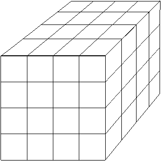
Se o cubo é pintado em todas as suas seis faces, alguns dos cubinhos internos não receberão tinta alguma. Quantos são esses cubinhos?
12 16 20 27 ________________________________________________________________
41) Se A é um número compreendido entre 0 e 1, então é FALSO que
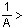1
0,9 . A < A - A > - 1 A ¸ 2A = 0,5 ________________________________________________________________
42) Em 3 dias, 72 000 bombons são embalados, usando-se 2 máquinas embaladoras funcionando 8 horas por dia. Se a fábrica usar 3 máquinas iguais às primeiras, funcionando 6 horas por dia, em quantos dias serão embalados 108 000 bombons?
3 3,5
4,5 5 ________________________________________________________________
43) João e Maria acertaram seus relógios às 14 horas do dia 7 de março. O relógio de João adianta 20 s por dia e o de Maria atrasa 16 s por dia. Dias depois, João e Maria se encontraram e notaram uma diferença de 4 minutos e 30 segundos entre os horários que seus relógios marcavam. Em que dia e hora eles se encontraram?
Em 12/03 à meia noite. Em 13/03 ao meio dia. Em 14/03 às 14 h. Em 14/03 às 22 h.
44) O faxineiro A limpa certo salão em 4 horas. O faxineiro B faz o mesmo serviço em 3 horas. Se A e B trabalharem juntos, em quanto tempo, aproximadamente, espera-se que o serviço seja feito? 2 horas e 7 minutos. 2 horas e 5 minutos. 1 hora e 57 minutos.
1 hora e 36 minutos. ________________________________________________________________
45) Na volta toda de um prédio, em cada andar, há um friso de ladrilhos, como mostra a figura abaixo. 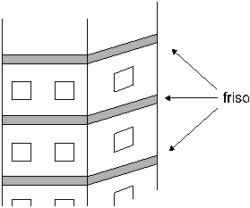
O prédio tem a forma de um prisma reto com base quadrada de 144 m2 de área. Além disso, tem 16 andares, incluindo o térreo. Se cada friso tem 20 cm de altura, qual é a área total da superfície desses frisos?
76,8 m2 144 m2
164,2 m2 168,4 m2 ________________________________________________________________
46) Qual é o menor número pelo qual se deve multiplicar 84 para se obter um quadrado perfeito?
18
27 35 42 ________________________________________________________________
47) Antonio tem 270 reais, Bento tem 450 reais e Carlos nada tem. Antonio e Bento dão parte de seu dinheiro a Carlos, de tal maneira que todos acabam ficando com a mesma quantia. O dinheiro dado por Antonio representa, aproximadamente, quanto por cento do que ele possuía?
13,2 15,2 33,3 35,5 ________________________________________________________________
48) A figura seguinte é formada por 4 triângulos de mesmo tamanho, alguns dos quais estão subdivididos em 9 triangulozinhos de mesmo tamanho.
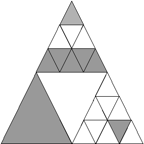
A que fração do total corresponde a parte sombreada na figura?
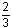 Imagine os números inteiros de 1 a 6 000, escritos na disposição que se vê abaixo:
49) Qual é o número escrito na 5a coluna da 243a linha?
961 1 059 1 451
3 151 ________________________________________________________________
50) Desejando limpar uma prateleira, a arrumadeira retirou de lá uma coleção de livros numerados de 1 a 9. Depois, ela recolocou aleatoriamente os livros na prateleira. É claro que ela pode tê-los colocado na ordem normal, ou seja, 1, 2, 3 etc. No entanto, a chance de isso ocorrer é apenas uma em
16 660 40 320
368 040 406 036
Fonte: Fundação Carlos Chagas |
||||||||||||||||||||||||||||